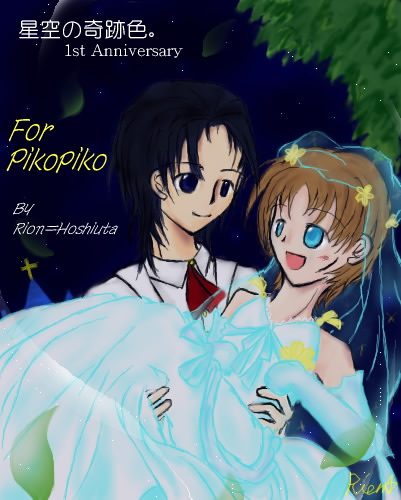

さーて、お久しぶりな四勇者リクエスト第五段をお届けいたします。
一段目と三〜四段目は四勇者原版別館行きとなりましたが、今回は久しぶりに裏ですよ奥さん。
リクエスト主はピコピコさん。
指定は、
クリカレで、
コスプレで、
新郎新婦です。（ずごーん）
ちょ、ちょっと待って下さいまさか本当にこんな凄まじい物が来るとは…！
いや、もしかしたらリクエスト第二段と同じくらい、メールを頂いた時はパソコン前で噴出しましたって！（笑
ええ、ええ、それはもう楽しんで描かさせて頂きましたとも（満面の微笑み。
だって自分じゃこんなの絶対描けな（描いたら変人扱いです）
最初で最後の機会だー！と無駄に気合を入れてお絵かきさせて頂きましたｖ
えーと、とりあえず破壊力はどれほどの物なのか分かりません。
コスプレして新郎新婦で姫抱っこ（指定ですｖ）してるだけです が。
…閲覧自己責任ｖ（にっこり）
擬人化。第三次創作。
覚悟の出来た方は、さあレッツスクロール。
＊—————————————＊————————————＊
満天の星空の元
願う祈りは一つだけ
ずっと一緒にいられますように———

星空の奇跡色。 １ｓｔ Ａｎｎｉｖｅｒｓａｒｙ
Ｒｅｑｕｅｓｔ ＴＨＡＮＫ Ｙｏｕ！
＊—————————————＊————————————＊
ごめんなさい。（ずごーん）
えっ、えーと、とりあえずやりすぎたかなぁってアハハハハ！（逃
本当はテラ姉も入れて欲しいとの事だったのですが、
この二人がラブラブ過ぎて入るスキマが無かったので割愛しました。
……あっ！こらそこ！そんな哀れむような目で見ないの！
第三次創作ですから！おふざけですから！；
ちなみにクリスケのウェディングドレスですが（笑）、
色々とそういうドレスを扱っているお店のネットカタログなどを見て回ってみても、似合う物が無かったので自力で描いてみました。
…こんなウェディングドレス無いと思いますがお許し下さい。（苦笑
わざわざネタ帳に全身図デザインしてましたよ。
…本当はブーケとかウェスト下とかのデザインも考えてたのに描けない＋潰れるで凹みました…orz
とりあえず、姫抱っこされた時のドレスの流れが上手く描けたかなぁと。
今回、初めて主線の色を変えてみたのですが、柔らかい表現が出来たので満足です。
ちなみにクリスケの露出度が高くないですかというツッコミは受け付けません（逸れる目線。
描いている途中でまたもやしぃペインターがイカれて、ＲＧＢとかほとんど見えないまま調節してたので、
…ええ、二重の意味で戦いでしたよ。
なんで二重？だから、一つはそのイカれたしぃペインターと、
もう一つは二人をもっとくっ付けたいという欲望ｔ（略。
………クリスケに、姫抱っこされたままカーレッジにキｓ（強制終了）させたかったんですが、ええ、させませんでしたよ…？
…やりたかｔｔ（終われ。
最後に一言。
これは第三次創作です！！（必死
え、えーと、とりあえずすっげぇ楽しかったです、はい。
こんなおふざけはさすがにもう無いとは思いますが（笑）描けて良かった…！
保存、転載はピコピコさんのみ可能です。
…あ、えと、転載するのでしたらこの絵はさすがに裏にお願いしますね！（笑
でもって第三次創作だと明記して下さいでないと私の人間性が疑われまｓ（略。
それではピコピコさん、リクエスト、どうもありがとうございましたーっ！